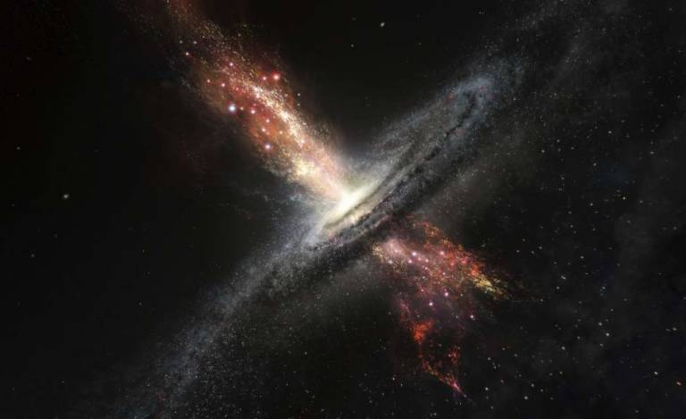
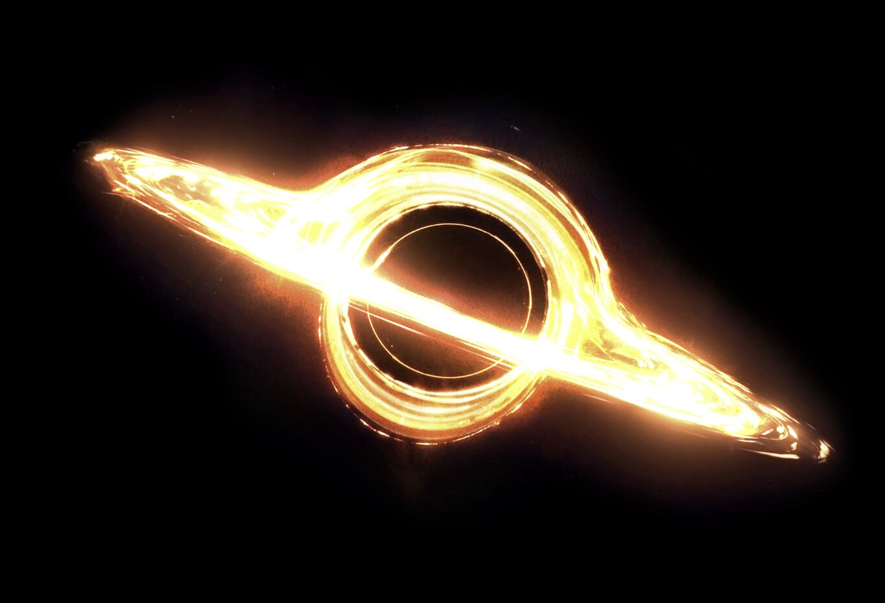

EXOPLANETAS
EN ESTA PAGINA HABLAREMOS DE EXOPLANETAS, LAS GALAXIAS Y AGUJEROS NEGROS
SISTEMA SOLAR
Se dice que solo existen 8 planetas en el sistema solar sin contar la luna y el sol pero es mentira a lo
largo de la hsitoria se ah descubierto varios planetas de diferentes formas tamaños estrellas agujeros negros hasta se ha podido
avistar la red cosmica y esta la teoria de un polimultiverso infinito existente, que quiero decir con esto, que existe la posibilidad
de que exista el multivverso, esto se a visto en comics, caricaturas incluso en peliculas como doctor strange pero la teoria del multiverso
puede ser real.
 |
KEPLER-22b
El recién confirmado planeta, denominado Kepler-22b, tiene cerca de 2,4 veces el radio de la Tierra. Los científicos
desconocen aún si la composición de Kepler-22b es predominantemente rocosa, gaseosa o líquida, pero su descubrimiento es un paso adelante
en la búsqueda de planetas similares a la Tierra, con el paso del tiempo las personas se dieron cuenta de este exoplaneta y cuando escucharon
el nombre se pusieron en contra y dijeron que el planeta kepler se llamara "NAMEKUSEI (NAMEK)" ya que tiene un parecido con el planeta y los
investigadores no tuvieron de otra y lo llamaron namekusei
 |
Este es un avistamiento de kepler-22b de como se veria se dice que tiene una atmosfera para procerar vida en este planeta
pero para llegar a ese planeta se estarian por lo menos unos 1000 a 2000 años de distancia de la tierra ya que este exoplaneta
esta situado en la galaxia de andromeda nuestra galaxia vecina.
 |
LA GALAXIA DE ANDROMEDA
La galaxia de Andrómeda, también conocida como Galaxia Espiral M31, Messier 31 o NGC 224, es una galaxia espiral con un diámetro
de 220.000 años luz (en lo que concierne a su halo galáctico) y de unos 150.000 años luz entre los extremos de sus brazos. Se encuentra a una distancia
de aproximadamente 2,5 millones de años luz de la Tierra, La galaxia de Andrómeda es visible a simple vista como una mancha difusa en el cielo nocturno,
y es uno de los objetos más fascinantes y estudiados por los astrónomos. Está a 2,5 millones de años luz2 en dirección a la constelación de Andrómeda. Es,
junto con nuestra propia galaxia, la más grande y brillante de las galaxias del Grupo Local, que consiste en aproximadamente 30 pequeñas galaxias más tres
grandes galaxias espirales: Andrómeda, la Vía Láctea y la galaxia del Triángulo.
 |
LA GALAXIA DEL TRIANGULO
La galaxia del Triángulo (también conocida como galaxia espiral M33, Objeto Messier 33, Messier 33, M33 o NGC 598) es una galaxia espiral
localizada en la constelación del Triangulum. Con entre 30 000 y 40 000 millones de estrellas3 es pequeña en comparación con sus vecinas mayores, la Vía Láctea
y la galaxia de Andrómeda que tienen, respectivamente, entre 200 000 y 400 000 millones y un billón de estrellas, pero su tamaño es parecido al del resto de galaxias
espirales del universo.
 |
AGUJERO NEGRO
Un agujero negro es una región finita del espacio cuyo interior posee una concentración de masa lo suficientemente elevada como para generar un campo
gravitatorio tal que, salvo por un determinado tipo de procesos cuánticos, ninguna partícula ni radiación —ni siquiera la luz— pueden escapar de él1 (en 2021 se observaron
reflejos de luz en la parte más lejana del agujero negro).2 Los agujeros negros pueden ser capaces de emitir un tipo de radiación, la radiación de Hawking, conjeturada por
Stephen Hawking en la década de 1970. La radiación emitida por agujeros negros como Cygnus X-1 no procede del propio agujero negro sino de su disco de acreción.3
 |
TON 618
TON 618 2 es un cuásar hiperluminoso localizado en el polo norte galáctico en la constelación Canes Venatici. Es probable que contenga al agujero negro
supermasivo más grande descubierto hasta ahora, quizás con una masa 66 mil millones de veces la masa del sol.
Se cree que TON 618 es un disco de acreción de gas caliente girando alrededor de un agujero negro supermasivo en el centro de una galaxia: se encuentra a 10 400 millones
de años luz, por lo que la luz de TON 618 se originó solo 3 400 millones de años después del Big Bang.1 La galaxia a su alrededor no es visible desde la Tierra, porque el
cuásar es demasiado brillante: con una magnitud absoluta de −30,7, brilla con la luminosidad de 4×1040 vatios, o como 140 billones de Soles, haciéndolo uno de los objetos
más brillantes del Universo.
 |
CHOQUE DE AGUJEROS
El impacto será inminente y podría pasar a la historia como uno de los grandes eventos astronómicos modernos. La colisión realmente aconteció hace 1000
millones de años, pero su efecto y la posibilidad de observarlo llegará ahora a la Tierra. La fusión de estos agujeros negros, permitirá estudiar cómo los agujeros aumentan
su tamaño, originan nuevas estructuras cósmicas y otros comportamientos.
 |